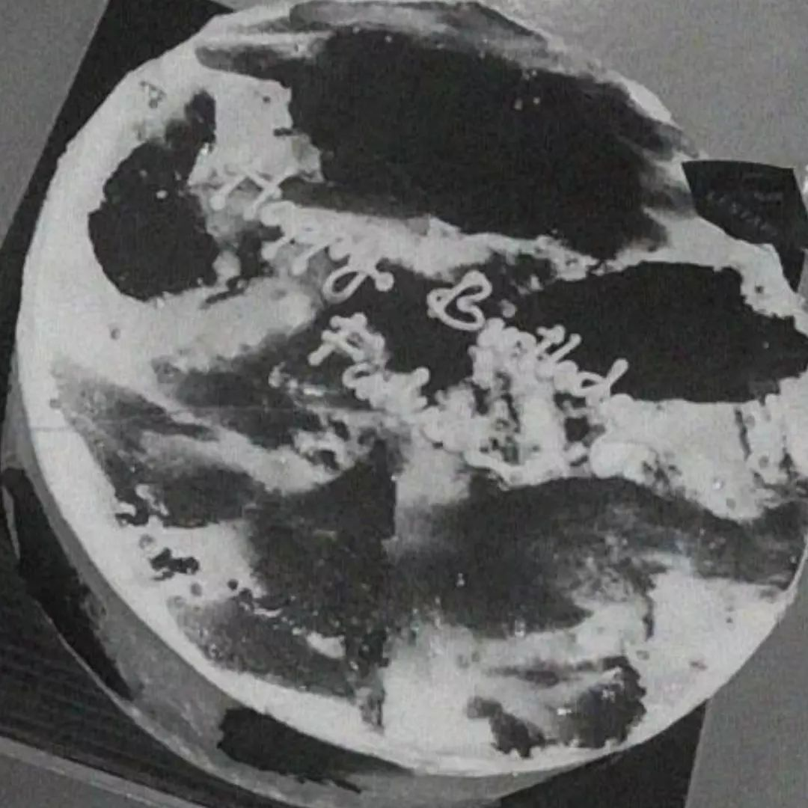
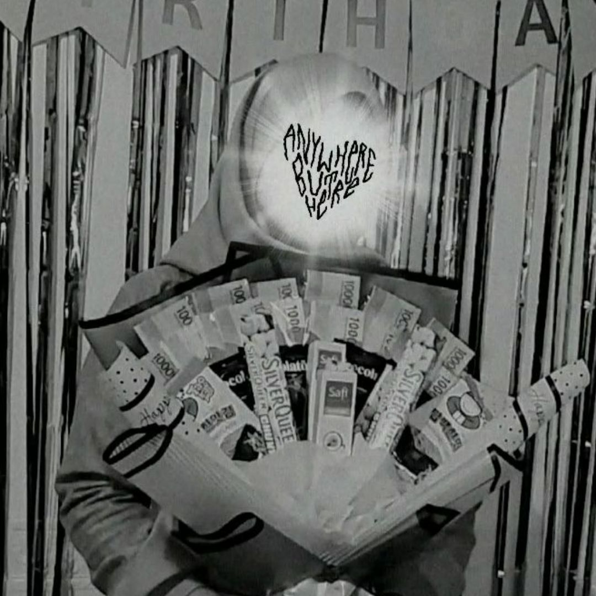
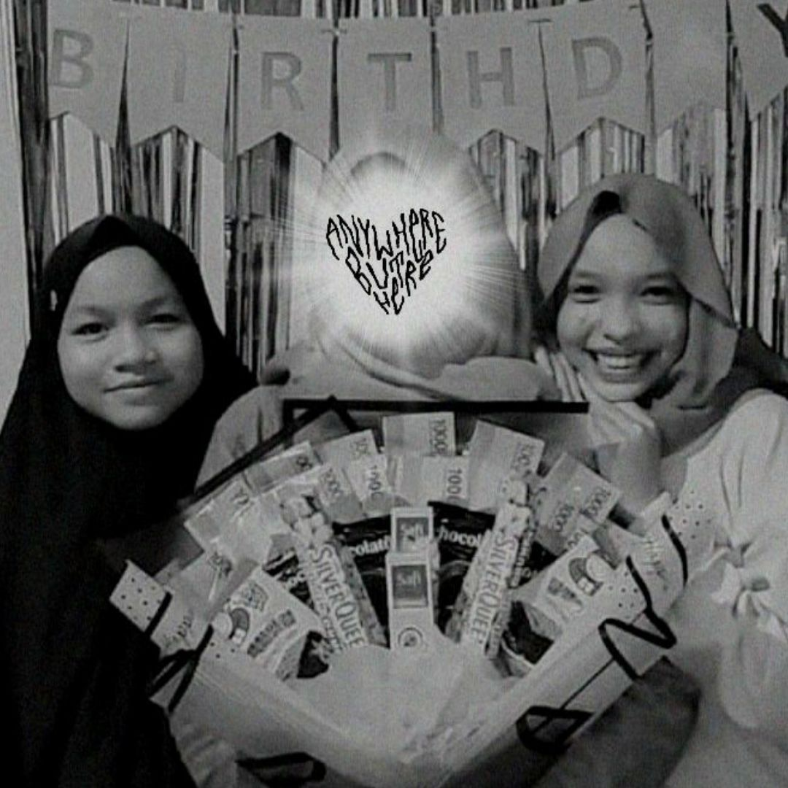

20 Mei, 2022
Pov it's my birthday
Dimana pada hari itu aku merayakan hari ulang tahunku yang ke 16 tahun. Kesan pertama, yang aku rasakan pada hari itu sanggat campur aduk sekali, antara senang dan sedih. Senangnya aku masih bisa merayakan hari ulang tahunku dan sedihnya karna aku umurku semakin tua. Semakin tua umur kita semakin banyak masalah yang kita hadapi. Namun dibalik itu semua, pasti banyak pelajaran yang kita ambil.
Read More

21, Mei 2022
Party Part 1
Keesokan harinya aku menggadakan pesta kecil - kecilan, untuk merayakan ulang tahun ku. Hari itu kita sanggat gembira sekali, banyak canda tawa yang kita keluarkan, dari mulai hal - hal random sampai hal - hal yang sanggat konyol.
Read More

21, Mei 2022
Party Part 2
Aku juga menggajak sahabat - sahabatku dan juga beberapa tetanggaku untuk memeriahkan acaraku.
Read More